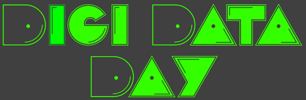

Embrace the graph!
https://bit.ly/3W3IA7i
By Mads Holten Rasmussen
Graphs?
directed graph
When to use graphs?
When the relationships are the most important part of the dataset
| ID | Time | Value |
|---|---|---|
| 2345 | 2023-05-15T07:07:00Z | 21.3 |
| 2346 | 2023-05-15T07:08:00Z | 70.1 |
Use a time series database!
Graphs vs. tables

RDF: Resource Description Framework
But how do we get from tables to graphs?
Querying the graph
Querying the graph is as easy as decribing a path along its edges
SPARQL: SPARQL Protocol and RDF Query Language
SELECT DISTINCT ?coActorName ?age
WHERE {
?movie dbo:starring ?theActor .
?movie dbo:starring ?otherActor .
?theActor rdfs:label "Mads Mikkelsen"@en .
?otherActor rdfs:label ?coActorName .
?otherActor dbo:birthDate ?bd .
BIND( NOW() as ?today )
BIND( YEAR(?today)-YEAR(?bd) as ?age )
FILTER(LANG(?coActorName) = "en")
}
Make ChatGPT build the knowledge graph
Use in combination
| ID | Time | Value |
|---|---|---|
| 2345 | 2023-05-15T07:07:00Z | 21.3 |
| 2346 | 2023-05-15T07:08:00Z | 70.1 |
| 2345 | 2023-05-15T07:09:00Z | 21.2 |
| 2346 | 2023-05-15T07:10:00Z | 70.4 |
| 2345 | 2023-05-15T07:07:00Z | 21.3 |
| 2346 | 2023-05-15T07:08:00Z | 70.2 |
| 2345 | 2023-05-15T07:09:00Z | 21.2 |
| 2346 | 2023-05-15T07:10:00Z | 70.1 |
Key takeaways
- Logical data model (like you would draw it on a board)
- Faster than RDBs for deep relationships
- You can use multiple standards to annotate your data
- Not the right choise for all kinds of data